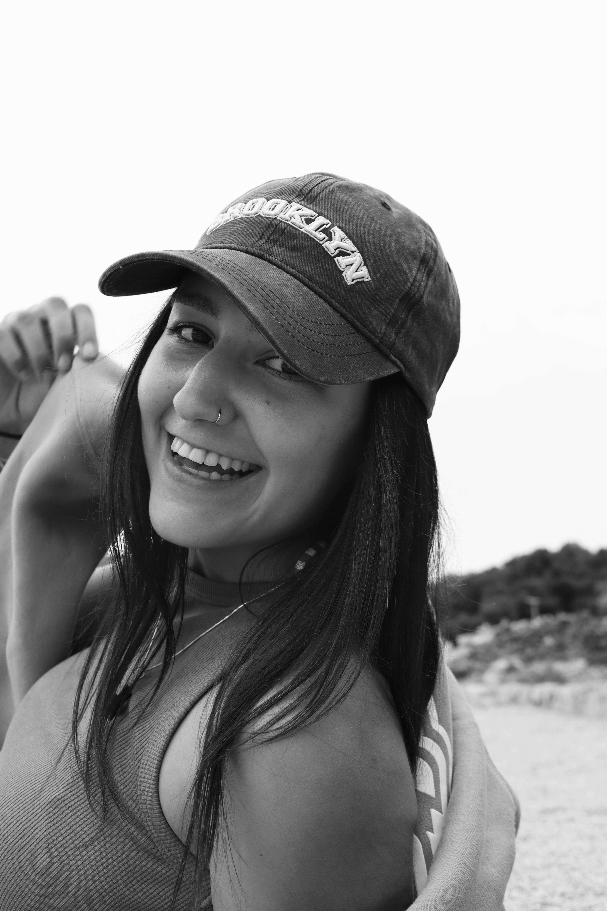

I'm Lucija Babić, a recent graduate in Informatics from the Faculty of Informatics and Digital Technologies in Rijeka.
My path in tech started with a mix of creativity and curiosity. I’ve always loved seeing ideas come to life through design and code - that process still motivates me today.
During my studies, I worked on different digital projects, from web and mobile applications to graphics and animations. Along the way, I discovered that front-end development and design are the fields where I feel the most aligned.
I enjoy working with HTML, CSS, JavaScript, React, Figma and Canva, and I love combining function with clean, visually engaging layouts.
Outside of tech, you’ll find me behind my Canon camera or DJI drone, capturing visuals I often use later in my projects.
My goal is to help people and brands transform ideas into clear, functional and visually meaningful digital experiences.

Birth Year: 2002
Location: Rijeka, Croatia
Organization: Ricky Wallace
City: Rijeka, Croatia
Currently
Organization: Algebra Bernays
City: Rijeka, Croatia
Currently
Faculty of Informatics and Digital Technologies
City: Rijeka, Croatia
2025
Organization: Meta Brains
City: Rijeka, Croatia
2024
Employer: Login d.o.o.
City: Rijeka, Croatia
2025
Created and managed web content within WordPress CMS. Actively contributed to page optimization according to SEO guidelines and improved content readability.
Employer: Oniria Studios
City: Zaragoza, Spain
2025
Contributed to the creation of visual materials in Canva and web design concepts in Figma. Helped develop the brand's visual identity and gained practical experience in digital design and teamwork.
Employer: HARTA d.o.o.
City: Matulji, Croatia
2023-2025
Managed websites in WordPress CMS and social media platforms. Maintained site functionality, optimized products and content, and created visual materials and online campaigns to enhance brand visibility.
English
Spanish
Italian
Photography
Digital Design
Travel
Sport & Fitness
Painting
Music